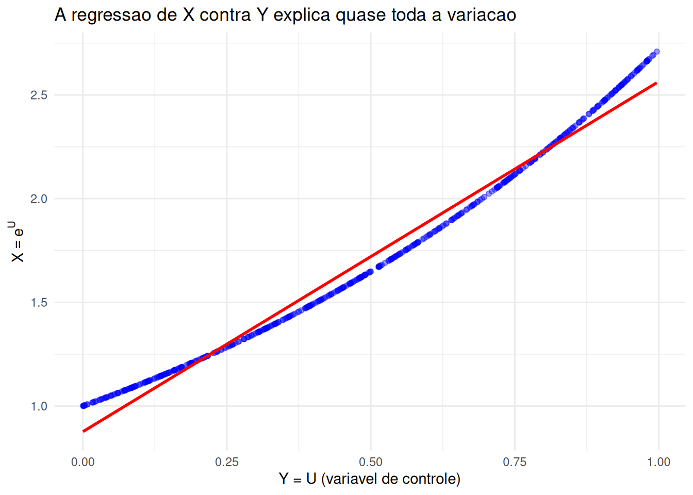
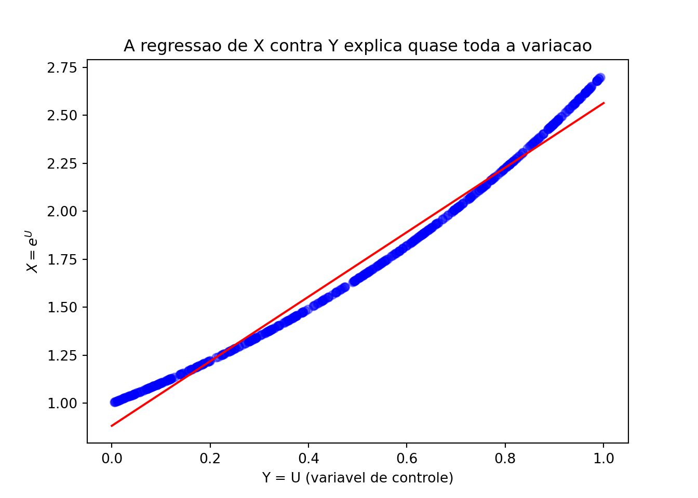

O capítulo anterior terminou com um diagnóstico incômodo: o erro padrão do estimador de Monte Carlo é \(\sigma/\sqrt{B}\), e o \(\sqrt{B}\) no denominador é implacável — para ganhar uma casa decimal é preciso multiplicar o número de simulações por \(100\). A taxa \(1/\sqrt{B}\) é inerente ao método e não há como melhorá-la. Resta atacar o outro fator: \(\sigma\).
É isso que fazem as técnicas deste capítulo. Todas seguem o mesmo roteiro: dado \(\theta = \mathbb{E}[g(X)]\), construir um estimador diferente do usual, que continue não viesado — isto é, que continue estimando o mesmo \(\theta\) — mas com variância menor. Como o número de simulações não muda, o ganho sai de graça em tempo de máquina; o preço é pago em outra moeda: cada técnica exige que saibamos algo a mais sobre o problema. Uma simetria, uma quantidade parecida com \(g(X)\) cuja esperança já conhecemos, ou uma esperança condicional que sabemos calcular no papel.
Veremos quatro técnicas:
variáveis antitéticas, que geram os valores aos pares, de modo que os erros de um se cancelem com os do outro;
variáveis de controle, que corrigem a estimativa usando uma quantidade auxiliar de média conhecida;
condicionamento, que substitui parte da simulação por uma conta feita no papel;
amostragem estratificada, que espalha os pontos de propósito, em vez de deixá-los inteiramente ao acaso.
O capítulo termina com uma ideia de natureza um pouco diferente, os números aleatórios comuns: ela não reduz a variância de uma estimativa isolada, e sim a da comparação entre duas. A amostragem por importância, a última das técnicas clássicas, é o assunto do Capítulo 11.
10.1 Medindo o ganho
Antes de reduzir a variância, precisamos combinar como comparar dois estimadores.
Definição: fator de redução de variância
Sejam \(\hat{\theta}\) o estimador de Monte Carlo usual e \(\tilde{\theta}\) um estimador alternativo, ambos não viesados para \(\theta\) e ambos baseados no mesmo número \(B\) de avaliações de \(g\). O fator de redução de variância de \(\tilde{\theta}\) é
Um fator de \(0{,}05\) (redução de \(95\%\)) significa que o estimador novo tem variância vinte vezes menor. Como a variância do estimador usual cai com \(1/B\), isso quer dizer que \(\hat{\theta}\) precisaria de vinte vezes mais simulações para atingir a mesma precisão — é assim que o ganho deve ser lido.
Atenção: compare a custo igual
Comparar variâncias só faz sentido se os dois estimadores custarem o mesmo. O erro mais comum é comparar um estimador antitético que usa \(2n\) avaliações de \(g\) com um estimador usual que usa apenas \(n\): metade do “ganho” observado seria obtida simplesmente por simular mais.
Neste capítulo, todas as comparações fixam o número total de avaliações de \(g\), denotado por \(B\). Quando as técnicas têm custos por avaliação muito diferentes (por exemplo, quando uma delas exige calcular uma \(\Phi\) a cada passo), o certo é comparar \(1/(\text{variância} \times \text{tempo})\), quantidade conhecida como eficiência do estimador.
Como as variâncias são estimadas neste capítulo
Para exibir o ganho, precisamos das variâncias dos estimadores. Elas aparecem adiante de duas formas:
repetindo a estimação inteira\(R\) vezes e calculando a variância amostral das \(R\) estimativas obtidas. É caro, mas é a forma mais direta de ilustrar o ganho;
a partir de uma única rodada, com o erro padrão \(\hat{\sigma}/\sqrt{B}\) do Capítulo 9, em que \(\hat{\sigma}\) é o desvio padrão amostral das \(B\) parcelas cuja média estamos tomando. É o que se faz na prática.
10.2 Técnica 1: Variáveis Antitéticas
Queremos estimar \(\theta = \mathbb{E}[X]\), e o estimador de Monte Carlo usual, com \(X_1, \dots, X_B\) i.i.d.,
trata todos os valores gerados como independentes. A ideia das variáveis antitéticas é abrir mão dessa independência de propósito: geramos os valores aos pares, de modo que, quando o primeiro elemento do par cai acima de \(\theta\), o segundo tenda a cair abaixo. A média do par fica mais próxima de \(\theta\) do que cada elemento isoladamente, e é essa compensação que reduz a variância.
Proposição: variância do estimador antitético
Sejam \((X_1, Y_1), \dots, (X_n, Y_n)\) pares independentes entre si, em que \(X_i\) e \(Y_i\) têm a mesma distribuição, com média \(\theta\), variância \(\sigma^2\) e correlação \(\rho = \text{Corr}(X_i, Y_i)\). O estimador antitético
Ou seja, tudo depende do sinal de \(\rho\). Se \(\rho < 0\), ganhamos; se \(\rho = 0\) (pares independentes), estamos de volta ao Monte Carlo usual; e se \(\rho > 0\), perdemos. Em particular, quando \(\rho = 1\) o estimador antitético é tão ruim quanto o estimador usual com metade dos pontos.
10.2.1 Como gerar pares negativamente correlacionados
Falta a parte prática: como construir \(Y_i\) com a mesma distribuição de \(X_i\) e correlação negativa com ele? A receita usa o método da inversão do Capítulo 4. Suponha que \(X = h(U)\), com \(U \sim \text{Unif}(0,1)\) — o que sempre é possível, tomando \(h = F^{-1}\), ainda que nem sempre seja simples.
A observação-chave é que \(1 - U\) também tem distribuição \(\text{Unif}(0,1)\). Portanto \(h(1-U)\) tem exatamente a mesma distribuição de \(X\), e em particular a mesma média \(\theta\) — o estimador continua não viesado. Além disso, \(U\) grande corresponde a \(1-U\) pequeno, e a monotonicidade de \(h\) transmite essa oposição para os valores gerados:
Se \(h\) é uma função monótona (não decrescente ou não crescente) e \(U \sim \text{Unif}(0,1)\), então
\[
\text{Cov}\big(h(U),\, h(1-U)\big) \leq 0.
\]
Demonstração
Suponha \(h\) não decrescente (o caso não crescente é análogo) e defina \(f(u) = h(u)\) e \(\ell(u) = h(1-u)\). Então \(f\) é não decrescente e \(\ell\) é não crescente, de modo que, para quaisquer \(u\) e \(u'\), os fatores de
têm sinais opostos (ou algum deles é zero): esse produto é sempre \(\leq 0\).
Sejam agora \(U\) e \(U'\) independentes, ambas \(\text{Unif}(0,1)\). Tomando a esperança do produto acima com \(u = U\) e \(u' = U'\), e usando que \(U\) e \(U'\) são independentes e de mesma distribuição,
Note que o passo 1 gera apenas \(n\) uniformes para produzir \(2n\) valores: além de reduzir a variância, o método economiza metade dos números aleatórios.
Atenção: a monotonicidade é de \(g \circ h\), não de \(h\)
Quando estimamos \(\mathbb{E}[g(X)]\), os valores que entram na média são \(g(h(U))\) e \(g(h(1-U))\). A proposição acima se aplica à composição \(g \circ h\), e é ela que precisa ser monótona. Se \(g \circ h\) for simétrica em torno de \(u = 1/2\) — como acontece com \(g(x) = x^2\) e \(h(u) = 2u - 1\) —, teremos \(\rho = 1\) e o método dobra a variância a custo igual, em vez de reduzi-la (Exercício 2).
Pelo método da inversão, \(X = -\log(U)\) tem distribuição \(\text{Exp}(1)\) quando \(U \sim \text{Unif}(0,1)\); logo \(h(u) = -\log(u)\), e o par antitético de \(X = -\log(U)\) é \(Y = -\log(1 - U)\). Como \(h\) é decrescente e \(g(x) = \log(1+x^2)\) é crescente em \(x > 0\), a composição \(g \circ h\) é monótona e a proposição garante correlação negativa.
set.seed(42)B <-20000# número total de avaliações de g, para os dois métodos# --- Monte Carlo usual: B valores independentesx_mc <-rexp(B, rate =1)theta_mc <-mean(log(1+ x_mc^2))# --- Antitético: n = B/2 uniformes geram B valores, aos paresu <-runif(B /2)x <--log(u) # X = h(U) ~ Exp(1)y <--log(1- u) # Y = h(1 - U) ~ Exp(1), o par antitético de Xg_x <-log(1+ x^2)g_y <-log(1+ y^2)theta_anti <-mean((g_x + g_y) /2)cat("Monte Carlo usual: ", theta_mc, "\n")
Monte Carlo usual: 0.6959782
Mostrar código
cat("Antitético: ", theta_anti, "\n")
Antitético: 0.6890659
Mostrar código
cat("Correlação do par: ", cor(g_x, g_y), "\n")
Correlação do par: -0.666576
Mostrar código
# Valor de referência, obtido por integração numéricaintegral <-integrate(function(x) log(1+ x^2) *exp(-x), 0, Inf)cat("Valor de referência:", integral$value, "\n")
Valor de referência: 0.6867559
Mostrar código
import numpy as npfrom scipy.integrate import quadnp.random.seed(42)B =20000# número total de avaliações de g, para os dois métodos# --- Monte Carlo usual: B valores independentesx_mc = np.random.exponential(scale=1.0, size=B)theta_mc = np.mean(np.log(1+ x_mc**2))# --- Antitético: n = B/2 uniformes geram B valores, aos paresu = np.random.uniform(0, 1, B //2)x =-np.log(u) # X = h(U) ~ Exp(1)y =-np.log(1- u) # Y = h(1 - U) ~ Exp(1), o par antitético de Xg_x = np.log(1+ x**2)g_y = np.log(1+ y**2)theta_anti = np.mean((g_x + g_y) /2)print("Monte Carlo usual: ", theta_mc)
Monte Carlo usual: 0.685042173881501
Mostrar código
print("Antitético: ", theta_anti)
Antitético: 0.6824565876024888
Mostrar código
print("Correlação do par: ", np.corrcoef(g_x, g_y)[0, 1])
Correlação do par: -0.6622699303881481
Mostrar código
# Valor de referência, obtido por integração numéricaintegral, _ = quad(lambda x: np.log(1+ x**2) * np.exp(-x), 0, np.inf)print("Valor de referência:", integral)
Valor de referência: 0.6867559231128539
As duas estimativas estão próximas do valor de referência, como deveriam: as duas são não viesadas. O que muda é a dispersão delas. Para enxergá-la, repetimos todo o processo \(R\) vezes e olhamos a variância das estimativas obtidas:
set.seed(42)B <-2000# avaliações de g em cada estimativaR <-2000# número de repetições, apenas para estimar as variânciastheta_mc <-numeric(R)theta_anti <-numeric(R)for (r in1:R) {# Estimativa usual, com B valores independentes theta_mc[r] <-mean(log(1+rexp(B)^2))# Estimativa antitética, com B/2 pares (também B avaliações de g) u <-runif(B /2) g_x <-log(1+ (-log(u))^2) g_y <-log(1+ (-log(1- u))^2) theta_anti[r] <-mean((g_x + g_y) /2)}cat("Variância do estimador usual: ", var(theta_mc), "\n")
Variância do estimador usual: 0.000293334
Mostrar código
cat("Variância do antitético: ", var(theta_anti), "\n")
Variância do antitético: 9.608894e-05
Mostrar código
cat("Fator de redução: ", var(theta_anti) /var(theta_mc), "\n")
Fator de redução: 0.3275752
Mostrar código
import numpy as npnp.random.seed(42)B =2000# avaliações de g em cada estimativaR =2000# número de repetições, apenas para estimar as variânciastheta_mc = np.zeros(R)theta_anti = np.zeros(R)for r inrange(R):# Estimativa usual, com B valores independentes theta_mc[r] = np.mean(np.log(1+ np.random.exponential(1.0, B)**2))# Estimativa antitética, com B/2 pares (também B avaliações de g) u = np.random.uniform(0, 1, B //2) g_x = np.log(1+ (-np.log(u))**2) g_y = np.log(1+ (-np.log(1- u))**2) theta_anti[r] = np.mean((g_x + g_y) /2)print("Variância do estimador usual: ", np.var(theta_mc, ddof=1))
Variância do estimador usual: 0.000300386628580812
Mostrar código
print("Variância do antitético: ", np.var(theta_anti, ddof=1))
Variância do antitético: 0.00010025745787497008
Mostrar código
print("Fator de redução: ", np.var(theta_anti, ddof=1) / np.var(theta_mc, ddof=1))
Fator de redução: 0.3337613872782561
O fator de redução observado é próximo de \(1 + \rho\), com o \(\rho\) estimado no bloco anterior — exatamente o que a proposição prevê.
10.3 Técnica 2: Variáveis de Controle
A segunda técnica parte de uma pergunta diferente: e se, além da quantidade que queremos estimar, soubéssemos simular uma outra quantidade parecida com ela e cuja média fosse conhecida?
Concretamente, queremos estimar \(\theta = \mathbb{E}[X]\) e dispomos de uma v.a. \(Y\), simulada junto com \(X\), cuja média \(\mathbb{E}[Y] = \mu\)conhecemos. Chamamos \(Y\) de variável de controle. A cada simulação, observamos o erro que o controle cometeu, \(Y - \mu\), e usamos essa informação para corrigir \(X\):
Definição: estimador com variável de controle
Seja \(Y\) uma v.a. com \(\mathbb{E}[Y] = \mu\) conhecida. Para uma constante \(c\), defina
\[
Z = X + c\,(Y - \mu).
\]
Como \(\mathbb{E}[Y - \mu] = 0\), temos \(\mathbb{E}[Z] = \mathbb{E}[X] = \theta\) para qualquer\(c\): a média de \(B\) cópias independentes de \(Z\) é um estimador não viesado de \(\theta\).
A ideia é intuitiva: se \(X\) e \(Y\) variam juntos e nesta simulação \(Y\) saiu maior que sua média, é razoável suspeitar que \(X\) também tenha saído grande demais — e então descontamos um pouco. Resta escolher quanto descontar.
A expressão da variância é a fórmula usual de \(\text{Var}(A + B)\) aplicada a \(A = X\) e \(B = c(Y-\mu)\), lembrando que constantes não alteram variâncias nem covariâncias. Como função de \(c\), ela é uma parábola com concavidade para cima (o coeficiente de \(c^2\) é \(\text{Var}(Y) > 0\)), de modo que o mínimo é o ponto em que a derivada se anula:
Duas leituras importantes. Primeiro, com \(c^*\) ótimo nunca se perde: o fator é sempre \(\leq 1\), e o pior caso (\(Y\) não correlacionada com \(X\)) apenas devolve o estimador usual. Segundo, o que importa é a correlação em módulo: um controle fortemente negativo é tão bom quanto um fortemente positivo, porque \(c^*\) ajusta o sinal automaticamente. Um controle com \(|\text{Corr}| = 0{,}9\) reduz a variância em \(81\%\); com \(0{,}99\), em \(98\%\).
10.3.1 Estimando \(c^*\) na prática
Em geral não conhecemos \(\text{Cov}(X,Y)\) nem \(\text{Var}(Y)\) — se conhecêssemos, provavelmente saberíamos também \(\theta\). A saída é estimá-los com as próprias \(B\) simulações:
Gere os pares \((X_1,Y_1), \dots, (X_B,Y_B)\) independentes, em que \(Y\) tem média \(\mu\) conhecida.
Estime a constante ótima: \[
\hat{c}^* = -\frac{\widehat{\text{Cov}}(X, Y)}{\widehat{\text{Var}}(Y)}.
\]
Calcule \(Z_i = X_i + \hat{c}^*\,(Y_i - \mu)\) e devolva \[
\hat{\theta}_C = \frac{1}{B}\sum_{i=1}^B Z_i,
\] com erro padrão \(\hat{\sigma}_Z/\sqrt{B}\), em que \(\hat{\sigma}_Z\) é o desvio padrão amostral dos \(Z_i\).
Variável de controle é regressão linear
Repare que \(\hat{c}^*\) é (a menos do sinal) exatamente o coeficiente angular da reta de regressão de \(X\) contra \(Y\). E \(Z_i = X_i + \hat{c}^*(Y_i - \mu)\) é o resíduo dessa reta, deslocado por uma constante.
É por isso que o método funciona: a regressão remove de \(X\) a parte que pode ser explicada linearmente por \(Y\), e sobra apenas o que \(Y\) não sabia prever. O fator \(1 - [\text{Corr}(X,Y)]^2\) é o velho conhecido \(1 - R^2\).
Atenção: estimar \(c^*\) introduz um pequeno viés
Como \(\hat{c}^*\) é calculado com a mesma amostra que fornece os \(X_i\), o produto \(\hat{c}^*(Y_i - \mu)\) não tem média exatamente zero, e o estimador deixa de ser rigorosamente não viesado. O viés é da ordem de \(1/B\), desprezível diante do erro padrão (que é da ordem de \(1/\sqrt{B}\)) quando \(B\) é grande.
Se você quiser eliminá-lo de vez, estime \(c^*\) em uma simulação piloto separada e use esse valor, fixo, na simulação principal (Exercício 6).
10.3.2 Exemplo 2: Estimando \(\mathbb{E}[e^U]\)
Considere \(X = e^U\), com \(U \sim \text{Unif}(0,1)\), cuja média é \(\theta = e - 1 \approx 1{,}7183\). A escolha natural de controle é a própria uniforme, \(Y = U\), com \(\mu = \mathbb{E}[U] = 1/2\) e \(\text{Var}(U) = 1/12\) conhecidas — e a correlação é alta porque \(e^u\) é quase uma reta no intervalo \((0,1)\).
Para saber o que esperar, façamos as contas. Integrando por partes com \(u = x\) e \(dv = e^x dx\), temos \(\int_0^1 x e^x dx = [xe^x - e^x]_0^1 = 1\), de modo que
Ou seja, esperamos uma redução de cerca de \(98{,}4\%\) — o estimador usual precisaria de mais de sessenta vezes mais simulações para igualar essa precisão.
set.seed(42)B <-10000u <-runif(B)x <-exp(u) # o que queremos promediary <- u # variável de controle, com média mu conhecidamu <-0.5# Constante ótima estimada com a própria amostrac_hat <--cov(x, y) /var(y)z <- x + c_hat * (y - mu)cat("c* teórico: ", -12* (1- (exp(1) -1) /2), "\n")
c* teórico: -1.690309
Mostrar código
cat("c* estimado:", c_hat, "\n\n")
c* estimado: -1.687179
Mostrar código
cat("Monte Carlo usual: ", mean(x), " (EP:", sd(x) /sqrt(B), ")\n")
import numpy as npnp.random.seed(42)B =10000u = np.random.uniform(0, 1, B)x = np.exp(u) # o que queremos promediary = u # variável de controle, com média mu conhecidamu =0.5# Constante ótima estimada com a própria amostrac_hat =-np.cov(x, y, ddof=1)[0, 1] / np.var(y, ddof=1)z = x + c_hat * (y - mu)print("c* teórico: ", -12* (1- (np.e -1) /2))
Com controle: 1.7177819552811089 (EP: 0.0006261456835013693 )
Mostrar código
print("Valor exato: ", np.e -1, "\n")
Valor exato: 1.718281828459045
Mostrar código
print("Correlação entre X e Y:", np.corrcoef(x, y)[0, 1])
Correlação entre X e Y: 0.9917715282123958
Mostrar código
print("Fator de redução: ", np.var(z, ddof=1) / np.var(x, ddof=1))
Fator de redução: 0.016389235827249004
O gráfico abaixo mostra o que aconteceu. Cada ponto é um par \((U_i, e^{U_i})\), e a reta é a regressão de \(X\) contra \(Y\): como os pontos quase caem sobre ela, os resíduos — que é o que o estimador com controle promedia — são muito menos dispersos que os próprios \(e^{U_i}\).
library(ggplot2)# Usa apenas os 500 primeiros pontos, para o gráfico não ficar carregadodados <-data.frame(y = y[1:500], x = x[1:500])ggplot(dados, aes(x = y, y = x)) +geom_point(alpha =0.4, color ="blue") +geom_smooth(method ="lm", se =FALSE, color ="red") +labs(x ="Y = U (variavel de controle)", y =expression(X == e^U),title ="A regressao de X contra Y explica quase toda a variacao") +theme_minimal()

Mostrar código
import matplotlib.pyplot as plt# Usa apenas os 500 primeiros pontos, para o gráfico não ficar carregadoy_plot, x_plot = y[:500], x[:500]# Coeficientes da reta de regressão de X contra Yinclinacao, intercepto = np.polyfit(y_plot, x_plot, 1)grade = np.linspace(0, 1, 100)plt.scatter(y_plot, x_plot, alpha=0.4, color='blue')
<matplotlib.collections.PathCollection object at 0x7d5b6aa8b380>
[<matplotlib.lines.Line2D object at 0x7d5b6aae1d10>]
Mostrar código
plt.xlabel('Y = U (variavel de controle)')
Text(0.5, 0, 'Y = U (variavel de controle)')
Mostrar código
plt.ylabel(r'$X = e^U$')
Text(0, 0.5, '$X = e^U$')
Mostrar código
plt.title('A regressao de X contra Y explica quase toda a variacao')
Text(0.5, 1.0, 'A regressao de X contra Y explica quase toda a variacao')
Mostrar código
plt.show()

10.3.3 Exemplo 3: Um controle vindo do próprio integrando
No exemplo anterior o controle era a própria uniforme, mas a receita geral é outra, e mais poderosa: substitua a parte difícil do integrando por uma aproximação cuja integral você saiba calcular. Essa aproximação vira o controle.
que não tem primitiva elementar. Mas o fator \(e^{-x}\) varia pouco em \((0,1)\) (entre \(1\) e \(0{,}37\)); trocando-o por uma constante, sobra algo que sabemos integrar:
Tomamos então \(Y = 1/(1+U^2)\) como variável de controle, com \(\mu = \pi/4\). Note que não precisamos nos preocupar com a constante multiplicativa que descartamos: qualquer múltiplo de \(Y\) leva ao mesmo estimador, porque \(c^*\) se ajusta na mesma proporção.
print("Correlação entre X e Y:", np.corrcoef(x, y)[0, 1])
Correlação entre X e Y: 0.9734944397145877
Mostrar código
print("Fator de redução: ", np.var(z, ddof=1) / np.var(x, ddof=1))
Fator de redução: 0.052308575844781255
10.4 Técnica 3: Condicionamento
A terceira técnica é, em certo sentido, a mais radical: em vez de melhorar a forma de combinar os valores simulados, ela simula menos. A ideia é que toda parte do problema que soubermos resolver analiticamente não precisa ser sorteada — e tudo o que não é sorteado não contribui com variabilidade.
Queremos estimar \(\theta = \mathbb{E}[X]\). Suponha que exista uma v.a. \(Y\), que sabemos simular, tal que a esperança condicional
\[
g(y) := \mathbb{E}[X \mid Y = y]
\]
tenha fórmula fechada. Então, em vez de gerar \(X\), geramos apenas \(Y\) e usamos \(g(Y)\) no lugar de \(X\).
Proposição: o estimador condicionado é melhor
Sejam \(Y_1, \dots, Y_B\) i.i.d. com a distribuição de \(Y\) e \(g(y) = \mathbb{E}[X \mid Y = y]\). O estimador
Dividindo os dois lados por \(B\), obtemos \(\text{Var}(\hat{\theta}_{\text{cond}}) \leq \text{Var}(\hat{\theta})\). \(\square\)
A demonstração diz mais do que o enunciado: a redução de variância é exatamente\(\mathbb{E}[\text{Var}(X\mid Y)]\), isto é, toda a variabilidade que sobraria em \(X\) depois de conhecido \(Y\). Ela some porque essa parte do sorteio deixou de ser feita.
Rao-Blackwellização
Trocar um estimador por sua esperança condicional é a mesma operação do Teorema de Rao-Blackwell, visto em cursos de inferência: condicionar nunca piora e costuma melhorar. Por isso a técnica também é chamada de Rao-Blackwellização do estimador de Monte Carlo.
Pseudo-algoritmo: condicionamento
Escolha \(Y\) tal que \(g(y) = \mathbb{E}[X \mid Y = y]\) seja conhecida em forma fechada.
Gere \(Y_1, \dots, Y_B\) independentes.
Devolva \[
\hat{\theta}_{\text{cond}} = \frac{1}{B}\sum_{i=1}^B g(Y_i),
\] com erro padrão \(\hat\sigma_g/\sqrt{B}\), em que \(\hat\sigma_g\) é o desvio padrão amostral dos \(g(Y_i)\).
Atenção: é preciso saber calcular \(\mathbb{E}[X \mid Y]\)
A técnica não custa nada em variância, mas cobra caro em álgebra: se \(\mathbb{E}[X\mid Y]\) tiver que ser estimada por simulação, não sobrou ganho algum. Na prática, ela se aplica quando o modelo é construído em etapas — sorteia \(Y\), depois sorteia \(X\) dado \(Y\) — e a segunda etapa é uma distribuição conhecida, cuja média ou probabilidade acumulada temos em uma função pronta.
10.4.1 Exemplo 4: Estimando \(\pi\)
Considere o algoritmo do Capítulo 9 para estimar \(\pi\): geramos pontos uniformes no quadrado \([-1,1]^2\) e contamos a proporção que cai no círculo de raio \(1\). Em símbolos, com \(X, Y \sim \text{Unif}(-1,1)\) independentes,
Aqui há dois sorteios, e podemos dispensar o segundo. Fixado \(X = x\), o ponto cai no círculo se \(|Y| \leq \sqrt{1-x^2}\), e como \(Y \sim \text{Unif}(-1,1)\) tem densidade \(1/2\),
\[
\mathbb{E}[Z \mid X = x] = \mathbb{P}\big(X^2 + Y^2 \leq 1 \mid X = x\big)
= \int_{-\sqrt{1-x^2}}^{\sqrt{1-x^2}} \frac{1}{2}\, dy = \sqrt{1 - x^2}.
\]
O estimador condicionado troca a indicadora (que só sabe dizer “dentro” ou “fora”) pela fração exata da faixa vertical que está dentro do círculo:
set.seed(42)# Estima pi e o erro padrão - sem condicionamentoestimate_pi_simple <-function(B) { u1 <-runif(B, -1, 1) u2 <-runif(B, -1, 1) z <-ifelse(u1^2+ u2^2<=1, 1, 0) p_hat <-mean(z) se <-4*sqrt(p_hat * (1- p_hat) / B) # EP por binomiallist(estimate =4* p_hat, se = se)}# Estima pi e o erro padrão - com condicionamento em Xestimate_pi_conditioning <-function(B) { x <-runif(B, -1, 1) g <-sqrt(1- x^2) # E[Z | X] se <-4*sd(g) /sqrt(B) # EP via amostra de glist(estimate =4*mean(g), se = se)}B <-10000res_simple <-estimate_pi_simple(B)res_cond <-estimate_pi_conditioning(B)cat("Sem condicionamento: est =", res_simple$estimate, "| EP =", res_simple$se, "\n")
Sem condicionamento: est = 3.1272 | EP = 0.01652096
Mostrar código
cat("Com condicionamento: est =", res_cond$estimate, "| EP =", res_cond$se, "\n")
Com condicionamento: est = 3.130729 | EP = 0.009053532
Mostrar código
cat("Fator de redução:", (res_cond$se / res_simple$se)^2, "\n")
Fator de redução: 0.3003071
Mostrar código
import numpy as npnp.random.seed(42)# Estima pi e o erro padrão - sem condicionamentodef estimate_pi_simple(B): u1 = np.random.uniform(-1, 1, B) u2 = np.random.uniform(-1, 1, B) z = (u1**2+ u2**2<=1).astype(int) p_hat = z.mean() se =4* np.sqrt(p_hat * (1- p_hat) / B) # EP por binomialreturn4* p_hat, se# Estima pi e o erro padrão - com condicionamento em Xdef estimate_pi_conditioning(B): x = np.random.uniform(-1, 1, B) g = np.sqrt(1- x**2) # E[Z | X] se =4* g.std(ddof=1) / np.sqrt(B) # EP via amostra de greturn4* g.mean(), seB =10000pi_simple, se_simple = estimate_pi_simple(B)pi_cond, se_cond = estimate_pi_conditioning(B)print("Sem condicionamento: est =", pi_simple, "| EP =", se_simple)
Sem condicionamento: est = 3.1348 | EP = 0.016468846225525333
Mostrar código
print("Com condicionamento: est =", pi_cond, "| EP =", se_cond)
Com condicionamento: est = 3.1540094743355818 | EP = 0.008885501290884038
Mostrar código
print("Fator de redução:", (se_cond / se_simple)**2)
Fator de redução: 0.2910968592795422
As contas confirmam o que se observa. Para a indicadora, \(\text{Var}(Z) = p(1-p) \approx 0{,}1685\) com \(p = \pi/4\); já para a versão condicionada,
um fator de redução de cerca de \(0{,}30\). E note o bônus: o estimador condicionado usa uma uniforme por simulação, em vez de duas.
10.4.2 Exemplo 5: Estimando \(\mathbb{P}(X > 1)\)
Seja \(Y \sim \text{Exp}(1)\) e suponha que \(X \mid Y = y \sim N(y, 4)\). Queremos estimar \(\theta = \mathbb{P}(X > 1)\). Este é o caso típico descrito acima: o modelo já vem em duas etapas, e a segunda é uma normal, cuja acumulada temos pronta.
Escrevendo \(\theta = \mathbb{E}[Z]\) com \(Z = I(X > 1)\), condicionamos em \(Y\):
set.seed(42)# Estima P(X > 1) e o EP - sem condicionamento (indicadora)estimate_prob_simple <-function(B) { y <-rexp(B, rate =1) # Y ~ Exp(1) x <-rnorm(B, mean = y, sd =2) # X | Y ~ N(Y, 4) z <-ifelse(x >1, 1, 0) p_hat <-mean(z)list(estimate = p_hat, se =sqrt(p_hat * (1- p_hat) / B))}# Estima P(X > 1) e o EP - com condicionamento em Yestimate_prob_conditioning <-function(B) { y <-rexp(B, rate =1) g <-1-pnorm((1- y) /2) # E[Z | Y]list(estimate =mean(g), se =sd(g) /sqrt(B))}B <-100000res_simple <-estimate_prob_simple(B)res_cond <-estimate_prob_conditioning(B)cat("Sem condicionamento: est =", res_simple$estimate, "| EP =", res_simple$se, "\n")
Sem condicionamento: est = 0.4905 | EP = 0.001580853
Mostrar código
cat("Com condicionamento: est =", res_cond$estimate, "| EP =", res_cond$se, "\n")
Com condicionamento: est = 0.4903664 | EP = 0.0005183444
Mostrar código
cat("Fator de redução:", (res_cond$se / res_simple$se)^2, "\n")
Fator de redução: 0.1075112
Mostrar código
import numpy as npfrom scipy.stats import normnp.random.seed(42)# Estima P(X > 1) e o EP - sem condicionamento (indicadora)def estimate_prob_simple(B): y = np.random.exponential(1, B) # Y ~ Exp(1) x = np.random.normal(y, 2, B) # X | Y ~ N(Y, 4) z = (x >1).astype(int) p_hat = z.mean()return p_hat, np.sqrt(p_hat * (1- p_hat) / B)# Estima P(X > 1) e o EP - com condicionamento em Ydef estimate_prob_conditioning(B): y = np.random.exponential(1, B) g =1- norm.cdf((1- y) /2) # E[Z | Y]return g.mean(), g.std(ddof=1) / np.sqrt(B)B =100000prob_simple, se_simple = estimate_prob_simple(B)prob_cond, se_cond = estimate_prob_conditioning(B)print("Sem condicionamento: est =", prob_simple, "| EP =", se_simple)
Sem condicionamento: est = 0.48977 | EP = 0.0015808078539152062
Mostrar código
print("Com condicionamento: est =", prob_cond, "| EP =", se_cond)
Com condicionamento: est = 0.4900730050240222 | EP = 0.0005167915603236426
Mostrar código
print("Fator de redução:", (se_cond / se_simple)**2)
Fator de redução: 0.10687414548573845
10.5 Técnica 4: Amostragem Estratificada
As três técnicas anteriores mexem no que fazemos com os pontos sorteados. A última mexe em onde eles caem.
O problema do sorteio puro é que ele é desigual: em \(B\) uniformes independentes, nada impede que sobrem pontos perto de \(0\) e faltem pontos perto de \(1\). Essa irregularidade é pura variabilidade desperdiçada. A amostragem estratificada elimina boa parte dela impondo, por construção, quantos pontos caem em cada pedaço do intervalo.
Queremos estimar \(\theta = \mathbb{E}[g(U)]\), com \(U \sim \text{Unif}(0,1)\). Dividimos \((0,1)\) em \(k\) intervalos de mesmo comprimento, chamados estratos,
Cada \(\theta_j\) é estimado separadamente, com \(m\) pontos sorteados dentro do estrato \(j\) — o que é fácil, porque uma uniforme em \(I_j\) se obtém de uma \(\text{Unif}(0,1)\) com a transformação \(u \mapsto (j - 1 + u)/k\).
Proposição: a estratificação nunca piora
Sejam \(U_{j1}, \dots, U_{jm}\) uniformes independentes no estrato \(I_j\), para \(j = 1,\dots,k\), num total de \(B = km\) pontos. O estimador estratificado
em que \(\sigma^2 = \text{Var}(g(U))\). Como \(\tau^2 \geq 0\), tem-se sempre \(\text{Var}(\hat{\theta}_{\text{est}}) \leq \sigma^2/B\).
Demonstração
Cada média interna estima \(\theta_j\) sem viés, e a média das \(k\) delas é \(\theta\) pela identidade acima. Escrevendo \(\sigma_j^2 = \text{Var}(g(U) \mid U \in I_j)\) e usando a independência de todos os pontos,
Seja agora \(J\) o índice do estrato em que cai uma uniforme, isto é, \(J = j\) quando \(U \in I_j\); note que \(J\) é uniforme em \(\{1,\dots,k\}\). A lei da variância total aplicada a \(g(U)\), condicionando em \(J\), dá
A demonstração revela o parentesco entre esta técnica e a anterior: estratificar é condicionar no estrato \(J\). O que desaparece da variância, \(\tau^2\), é justamente a variabilidade entre estratos — aquela que se deve apenas ao fato de \(U\) ter caído mais para a esquerda ou mais para a direita. Sobra só a variabilidade dentro de cada estrato, que é pequena quando os estratos são estreitos.
Pseudo-algoritmo: amostragem estratificada
Para estimar \(\theta = \mathbb{E}[g(U)]\) com \(B = km\) avaliações de \(g\):
Escolha o número de estratos \(k\) e o número de pontos por estrato \(m\).
Para \(j = 1, \dots, k\) e \(i = 1, \dots, m\): gere \(V_{ji} \sim \text{Unif}(0,1)\) e faça \[
U_{ji} = \frac{j - 1 + V_{ji}}{k},
\] que é uniforme no estrato \(I_j\).
O pseudo-algoritmo está escrito para \(\theta = \mathbb{E}[g(U)]\), com \(U\) uniforme, mas serve para qualquer v.a. contínua \(X\) com f.d.a. \(F\): basta aplicar o método da inversão do Capítulo 4 aos uniformes já estratificados,
\[
X_{ji} = F^{-1}(U_{ji}).
\]
Como \(U_{ji}\) é uniforme em \(\left(\frac{j-1}{k}, \frac{j}{k}\right]\), o valor \(X_{ji}\) cai entre os quantis \(F^{-1}\!\left(\frac{j-1}{k}\right)\) e \(F^{-1}\!\left(\frac{j}{k}\right)\) de \(X\). Ou seja, os estratos deixam de ser faixas de mesmo comprimento e passam a ser faixas de mesma probabilidade\(1/k\) — que é exatamente o que a demonstração acima usa, e por isso a proposição continua valendo palavra por palavra.
Para estratificar uma \(N(0,1)\) em 10 estratos, por exemplo, basta trocar (estrato + v)/k por qnorm((estrato + v)/k) em R, ou por scipy.stats.norm.ppf((estrato + v)/k) em Python.
Quanto se ganha, e por quê o ganho é tão grande
Se \(g\) for suave, dentro de um estrato de largura \(1/k\) ela é quase uma reta, e \(\sigma_j^2 \approx g'(x_j)^2/(12k^2)\). Somando sobre os estratos,
isto é, o ganho cresce com \(k^2\): dobrar o número de estratos divide a variância por quatro, sem simular um ponto a mais. Se ainda por cima fizermos \(m\) pequeno e \(k\) crescer junto com \(B\) (por exemplo, um ponto por estrato, \(k = B\)), a variância cai como \(B^{-3}\) e o erro padrão como \(B^{-3/2}\), muito mais rápido que o \(B^{-1/2}\) do Monte Carlo usual.
Nada disso é de graça, porém. Em dimensão \(d\), estratificar cada eixo em \(k\) pedaços exige \(k^d\) estratos: a técnica sofre da maldição da dimensionalidade discutida no Capítulo 9, e é sobretudo útil em dimensão baixa. Uma saída parcial é o hipercubo latino, que estratifica cada eixo separadamente em vez de estratificar o cubo inteiro, e por isso mantém \(B\) estratos por eixo qualquer que seja \(d\) (Exercício 19).
Atenção: com um ponto por estrato não há erro padrão
Com \(m = 1\) não é possível estimar \(\sigma_j^2\) dentro de cada estrato, e o estimador fica sem barra de erro. Na prática, usa-se \(m \geq 2\) e o erro padrão \[
\widehat{\text{ep}} = \frac{1}{k}\sqrt{\sum_{j=1}^k \frac{\hat{\sigma}_j^2}{m}},
\] com \(\hat{\sigma}_j^2\) a variância amostral dentro do estrato \(j\). Usar a fórmula usual \(\hat\sigma/\sqrt{B}\) sobre todos os pontos juntos superestima o erro, porque ela ignora que os pontos não foram sorteados de forma independente.
Voltemos a \(\theta = \mathbb{E}[e^U] = e - 1\), agora com \(k = 10\) estratos e \(m = 100\) pontos em cada um (\(B = 1000\) avaliações, como no Monte Carlo usual com que comparamos).
set.seed(42)k <-10# número de estratosm <-100# pontos por estratoB <- k * m# Ponto i do estrato j: desloca uma Unif(0,1) para dentro de I_jv <-runif(B)estrato <-rep(0:(k -1), each = m)u <- (estrato + v) / k# Cada coluna da matriz reúne os m pontos de um mesmo estratovalores <-matrix(exp(u), nrow = m, ncol = k)medias <-colMeans(valores)variancias <-apply(valores, 2, var)theta_est <-mean(medias)ep_est <-sqrt(sum(variancias / m)) / k# Monte Carlo usual, com o mesmo número de avaliaçõesx <-exp(runif(B))cat("Monte Carlo usual: ", mean(x), " (EP:", sd(x) /sqrt(B), ")\n")
cat("Fator de redução: ", (ep_est / (sd(x) /sqrt(B)))^2, "\n")
Fator de redução: 0.01082373
Mostrar código
import numpy as npnp.random.seed(42)k =10# número de estratosm =100# pontos por estratoB = k * m# Ponto i do estrato j: desloca uma Unif(0,1) para dentro de I_jv = np.random.uniform(0, 1, B)estrato = np.repeat(np.arange(k), m)u = (estrato + v) / k# Cada linha da matriz reúne os m pontos de um mesmo estratovalores = np.exp(u).reshape(k, m)medias = valores.mean(axis=1)variancias = valores.var(axis=1, ddof=1)theta_est = medias.mean()ep_est = np.sqrt((variancias / m).sum()) / k# Monte Carlo usual, com o mesmo número de avaliaçõesx = np.exp(np.random.uniform(0, 1, B))print("Monte Carlo usual: ", np.mean(x)," (EP:", np.std(x, ddof=1) / np.sqrt(B), ")")
Monte Carlo usual: 1.7316256444846885 (EP: 0.01572800685558926 )
print("Fator de redução: ", (ep_est / (np.std(x, ddof=1) / np.sqrt(B)))**2)
Fator de redução: 0.010728769936899486
10.6 Colocando as técnicas lado a lado
Para comparar as quatro técnicas de forma justa, aplicamos todas ao mesmo problema — \(\theta = \mathbb{E}[e^U] = e - 1\) — com o mesmo número de avaliações de \(g\), e estimamos a variância de cada estimador repetindo a estimação \(R\) vezes.
set.seed(42)B <-1000# avaliações de g em cada estimativaR <-2000# repetições, apenas para estimar as variânciasmc_simples <-function(B) {mean(exp(runif(B)))}antitetica <-function(B) { u <-runif(B /2)mean(c(exp(u), exp(1- u)))}com_controle <-function(B) { u <-runif(B) x <-exp(u) c_hat <--cov(x, u) /var(u)mean(x + c_hat * (u -0.5))}estratificada <-function(B, k) { v <-runif(B) estrato <-rep(0:(k -1), each = B / k)mean(exp((estrato + v) / k))}# Repete cada estimador R vezes. replicate(R, expr) avalia expr R vezes# e devolve o vetor dos R resultadosestimativas <-list("Monte Carlo simples"=replicate(R, mc_simples(B)),"Antitética"=replicate(R, antitetica(B)),"Variável de controle"=replicate(R, com_controle(B)),"Estratificada (k = 10)"=replicate(R, estratificada(B, 10)),"Estratificada (k = 100)"=replicate(R, estratificada(B, 100)))variancias <-sapply(estimativas, var)referencia <- variancias["Monte Carlo simples"]for (metodo innames(variancias)) {# Completa o nome com espaços até 24 caracteres, para alinhar as colunas rotulo <-paste0(metodo, strrep(" ", 24-nchar(metodo)))cat(rotulo, sprintf(" var = %.3e fator = %.4f\n", variancias[metodo], variancias[metodo] / referencia),sep ="")}
Monte Carlo simples var = 2.300e-04 fator = 1.0000
Antitética var = 7.963e-06 fator = 0.0346
Variável de controle var = 3.773e-06 fator = 0.0164
Estratificada (k = 10) var = 2.716e-06 fator = 0.0118
Estratificada (k = 100) var = 2.648e-08 fator = 0.0001
Mostrar código
import numpy as npnp.random.seed(42)B =1000# avaliações de g em cada estimativaR =2000# repetições, apenas para estimar as variânciasdef mc_simples(B):return np.mean(np.exp(np.random.uniform(0, 1, B)))def antitetica(B): u = np.random.uniform(0, 1, B //2)return np.mean(np.concatenate((np.exp(u), np.exp(1- u))))def com_controle(B): u = np.random.uniform(0, 1, B) x = np.exp(u) c_hat =-np.cov(x, u, ddof=1)[0, 1] / np.var(u, ddof=1)return np.mean(x + c_hat * (u -0.5))def estratificada(B, k): v = np.random.uniform(0, 1, B) estrato = np.repeat(np.arange(k), B // k)return np.mean(np.exp((estrato + v) / k))estimativas = {"Monte Carlo simples": [mc_simples(B) for _ inrange(R)],"Antitética": [antitetica(B) for _ inrange(R)],"Variável de controle": [com_controle(B) for _ inrange(R)],"Estratificada (k = 10)": [estratificada(B, 10) for _ inrange(R)],"Estratificada (k = 100)": [estratificada(B, 100) for _ inrange(R)],}variancias = {nome: np.var(v, ddof=1) for nome, v in estimativas.items()}referencia = variancias["Monte Carlo simples"]for metodo, variancia in variancias.items():print(f"{metodo:<24s} var = {variancia:.3e} fator = {variancia/referencia:.4f}")
Monte Carlo simples var = 2.384e-04 fator = 1.0000
Antitética var = 7.764e-06 fator = 0.0326
Variável de controle var = 4.018e-06 fator = 0.0169
Estratificada (k = 10) var = 2.553e-06 fator = 0.0107
Estratificada (k = 100) var = 2.660e-08 fator = 0.0001
Três lições ficam desta tabela.
Primeiro, todas as técnicas ganham, e ganham muito: os fatores de redução são da ordem de \(10^{-2}\) ou menos, ou seja, o Monte Carlo usual precisaria de dezenas a milhares de vezes mais simulações para empatar.
Segundo, elas ganham por motivos diferentes. A antitética e o controle se aproveitam de \(e^u\) ser quase uma reta em \((0,1)\); a estratificação se aproveita de \(e^u\) ser suave. Em um problema em que \(g\) oscilasse muito, as três perderiam boa parte da vantagem — e a comparação poderia se inverter.
Terceiro, nenhuma delas é universal. A antitética exige monotonicidade, o controle exige uma variável auxiliar de média conhecida, o condicionamento exige uma esperança condicional em forma fechada e a estratificação exige dimensão baixa. Vale a pena tentar mais de uma — e, muitas vezes, combiná-las (Exercício 13).
10.7 Números aleatórios comuns
As quatro técnicas anteriores respondem sempre à mesma pergunta: quanto vale \(\theta\)? Mas muitas vezes a pergunta é outra — qual das duas alternativas é melhor? Dois algoritmos, dois desenhos de experimento, duas políticas de estoque, o mesmo modelo com dois valores de um parâmetro. Aí o alvo não é uma esperança, e sim uma diferença:
\[
\Delta = \theta_1 - \theta_2 .
\]
O estimador natural é \(\hat{\Delta} = \hat{\theta}_1 - \hat{\theta}_2\), e sua variância é
Se rodarmos as duas simulações de forma independente — o que acontece por padrão, se simplesmente executarmos dois programas —, a covariância é zero e as duas variâncias se somam. Mas nada nos obriga a isso. Podemos alimentar as duas simulações com os mesmos números aleatórios: se os dois sistemas reagem de forma parecida aos mesmos sorteios, a covariância fica positiva e a variância da diferença cai.
Proposição: variância da diferença
Sejam \(\hat{\theta}_1\) e \(\hat{\theta}_2\) estimadores não viesados de \(\theta_1\) e \(\theta_2\), ambos com variância \(\sigma^2/B\) e correlação \(\rho = \text{Corr}(\hat{\theta}_1, \hat{\theta}_2)\). Então \(\hat{\Delta} = \hat{\theta}_1 - \hat{\theta}_2\) é não viesado para \(\Delta\) e
usando \(\text{Cov}(\hat\theta_1,\hat\theta_2) = \rho\,\sigma^2/B\). Com simulações independentes, \(\rho = 0\) e a variância é \(2\sigma^2/B\); a razão entre as duas é \(1 - \rho\). \(\square\)
É a antitética com o sinal trocado
Vale a pena colocar as duas técnicas lado a lado, porque a ideia é a mesma — induzir correlação de propósito — e só o sinal desejado muda:
Técnica
O que promediamos
Queremos
Fator
Variáveis antitéticas
uma soma, \(X_i + Y_i\)
\(\rho < 0\)
\(1 + \rho\)
Números aleatórios comuns
uma diferença, \(\hat\theta_1 - \hat\theta_2\)
\(\rho > 0\)
\(1 - \rho\)
Na antitética, alimentamos o segundo valor com \(1 - U\) para forçar oposição; aqui alimentamos o segundo sistema com o próprio \(U\) para forçar semelhança.
Pseudo-algoritmo: números aleatórios comuns
Para estimar \(\Delta = \theta_1 - \theta_2\) com \(B\) avaliações de cada sistema:
Gere \(U_1, \dots, U_B \sim \text{Unif}(0,1)\)uma única vez.
Para cada \(i\), calcule a diferença pareada\[
D_i = g_1\big(h_1(U_i)\big) - g_2\big(h_2(U_i)\big),
\] usando o mesmo \(U_i\) nos dois sistemas.
Devolva \[
\hat{\Delta} = \frac{1}{B}\sum_{i=1}^B D_i,
\] com erro padrão \(\hat{\sigma}_D/\sqrt{B}\), em que \(\hat{\sigma}_D\) é o desvio padrão amostral dos \(D_i\).
Atenção: o erro padrão vem das diferenças pareadas
O passo 3 é onde o método é mais fácil de estragar. Se você calcular os erros padrão dos dois sistemas separadamente e combiná-los como \(\sqrt{\widehat{\text{ep}}_1^2 + \widehat{\text{ep}}_2^2}\), jogará fora exatamente o ganho obtido: essa fórmula pressupõe independência, que é o que acabamos de destruir de propósito. O erro padrão precisa ser calculado a partir dos \(D_i\).
É a mesma distinção entre o teste \(t\) para duas amostras independentes e o teste \(t\)pareado: quando as observações vêm aos pares, é a variabilidade das diferenças que interessa, não a de cada grupo.
10.7.1 Exemplo 7: qual o efeito de mudar um parâmetro?
Este é o caso difícil, e o mais frequente na prática: a diferença que queremos medir é pequena, muito menor que a variabilidade de cada simulação isolada.
Pelo método da inversão, \(X = -\log(U)/\lambda\). Usar números comuns significa usar o mesmo \(U\) nos dois valores de \(\lambda\) — e note o que isso produz: \(X_2 = X_1 \cdot (\lambda_1/\lambda_2)\). Os dois sistemas enxergam exatamente o mesmo sorteio, apenas reescalado.
print(" IC de 95%: [", dif_comum -1.96* ep_comum, ",", dif_comum +1.96* ep_comum, "]\n")
IC de 95%: [ 0.007369022031062643 , 0.007609338255140624 ]
Mostrar código
print("Correlação entre os dois sistemas:", np.corrcoef(g(-np.log(u) / lambda1), g(-np.log(u) / lambda2))[0, 1])
Correlação entre os dois sistemas: 0.9999960693825236
Mostrar código
print("Fator de redução:", (ep_comum / ep_indep)**2)
Fator de redução: 3.224885443299369e-05
O contraste é brutal. Com simulações independentes, o intervalo de confiança tem largura de cerca de \(0{,}043\) — quase seis vezes a diferença que se queria medir. Dependendo da semente, ele chega a conter o zero: com esses números não dá nem para afirmar com segurança qual dos dois valores é maior. Com números comuns, a correlação entre os sistemas passa de \(0{,}999\), o fator de redução fica na casa de \(10^{-5}\), e a margem de erro do intervalo cai de quase \(300\%\) da diferença para menos de \(2\%\) dela — com exatamente o mesmo esforço computacional.
A explicação é a mesma de sempre: a variabilidade de \(g(X)\) é enorme comparada ao efeito de mexer \(1\%\) em \(\lambda\). Rodando as duas simulações separadamente, medimos essa variabilidade duas vezes e tentamos enxergar o efeito por trás dela. Rodando com os mesmos sorteios, ela aparece nos dois lados da subtração e se cancela, sobrando só o que de fato muda quando \(\lambda\) muda.
Atenção: os números precisam ser usados para a mesma coisa
O ganho depende de os dois sistemas reagirem de forma parecida ao mesmo sorteio, e para isso cada número aleatório precisa desempenhar o mesmo papel nos dois. Se um dos sistemas consumir uma quantidade variável de uniformes — o que acontece em qualquer algoritmo de rejeição, dos Capítulos 5 e 6 —, os dois fluxos se desalinham na primeira vez em que o número de tentativas diferir, e a partir dali os sistemas passam a ver sorteios essencialmente independentes. Esse cuidado, chamado de sincronização, é mais um argumento a favor da inversão, que consome exatamente um uniforme por valor gerado.
E o ganho não é garantido: se os dois sistemas reagirem em sentidos opostos ao mesmo sorteio, teremos \(\rho < 0\) e a variância da diferença aumenta — o espelho exato do que acontece com as antitéticas quando \(g \circ h\) é simétrica (Exercício 14).
10.8 Exercícios
Exercício 1. Implemente a técnica das variáveis antitéticas para estimar \(\mathbb{E}[X^2]\), em que \(X \sim \text{Unif}(0, \pi)\).
Escreva \(X\) como \(h(U)\), com \(U \sim \text{Unif}(0,1)\), e identifique a função \(g \circ h\) cuja monotonicidade garante o ganho.
Estime \(\mathbb{E}[X^2]\) pelos dois métodos com \(B = 10^4\) avaliações em cada um e compare as estimativas com o valor exato \(\pi^2/3\).
Repita a estimação \(R = 1000\) vezes e calcule o fator de redução de variância observado.
Mostre que \(\text{Corr}(U^2, (1-U)^2) = -7/8\) (use \(\mathbb{E}[U^2(1-U)^2] = 1/30\)) e verifique que o fator obtido em (c) está próximo de \(1 + \rho\).
Exercício 2. Seja \(U \sim \text{Unif}(0,1)\) e \(\theta = \mathbb{E}[\sin(\pi U)]\).
Mostre que \(\sin(\pi(1-u)) = \sin(\pi u)\) para todo \(u\) e conclua que, neste caso, a correlação do par antitético vale exatamente \(1\).
Conclua da proposição que o estimador antitético com \(B\) avaliações é idêntico ao estimador usual com \(B/2\) avaliações. Verifique isso empiricamente, estimando as variâncias com \(R = 1000\) repetições.
A moral é que a simetria de \(g\) em torno de \(1/2\) é o pior cenário possível para a antitética. Proponha uma variável de controle para este problema — por exemplo, \(Y = U(1-U)\), cuja média é \(1/6\) — e verifique quanta variância ela reduz.
Exercício 3. Sejam \(X = -\log U\) e \(Y = -\log(1-U)\), com \(U \sim \text{Unif}(0,1)\).
Mostre que \(X\) e \(Y\) têm ambas distribuição \(\text{Exp}(1)\).
Argumente que \(h(u) = -\log u\) é monótona e conclua o sinal de \(\text{Corr}(X,Y)\).
Considere \(\theta = \mathbb{E}[e^{-X}]\), cujo valor exato é \(1/2\). Mostre que \(e^{-X} = U\) e que, portanto, o estimador antitético tem variância zero — ele acerta \(\theta\) exatamente, em qualquer simulação. Confirme rodando o código.
Estime \(\mathbb{E}[X^2] = 2\) pelos dois métodos e compare as variâncias. Por que aqui o ganho é grande, mas não infinito?
Exercício 4. Seja \(Z \sim N(0,1)\). Como \(-Z\) também tem distribuição \(N(0,1)\), os pares \((Z_i, -Z_i)\) são a versão antitética natural para a normal.
Justifique essa afirmação escrevendo \(Z = \Phi^{-1}(U)\) e verificando que \(\Phi^{-1}(1-U) = -\Phi^{-1}(U)\).
Estime \(\mathbb{E}[e^Z] = e^{1/2}\) pelos dois métodos e calcule o fator de redução observado.
Estime \(\mathbb{P}(Z > 1{,}5)\) pelos dois métodos. O ganho é bem menor que em (b): mostre que, neste caso, \(\rho = -p/(1-p)\) com \(p = \mathbb{P}(Z > 1{,}5)\), e conclua que, para eventos raros, a antitética é quase inútil. (Este é um dos problemas que motivam o Capítulo 11.)
Estime \(\mathbb{E}[Z^2] = 1\) pelos dois métodos. O que acontece, e por quê?
Escreva \(\theta\) como \((\pi/4)^2\,\mathbb{E}[g(X,Y)]\), com \(X\) e \(Y\) uniformes independentes em \((0, \pi/4)\), e implemente o estimador de Monte Carlo usual.
Use \(X^2 Y^2\) como variável de controle, calculando \(\mathbb{E}[X^2 Y^2]\) analiticamente (lembre-se de que \(X\) e \(Y\) são independentes).
Estime a correlação entre o integrando e o controle e compare o fator de redução observado com o valor previsto, \(1 - \text{Corr}^2\).
Exercício 6. Volte ao Exemplo 2, em que \(\theta = \mathbb{E}[e^U] = e - 1\).
Use como controle a aproximação de Taylor de segunda ordem \(Y = 1 + U + U^2/2\), cuja média é \(5/3\). Compare o fator de redução com o obtido no Exemplo 2, em que o controle era \(Y = U\).
Explique, com base na interpretação de regressão, por que este controle é melhor.
Investigue o viés causado por estimar \(c^*\) com a própria amostra: com \(B = 20\), repita a estimação \(R = 10^5\) vezes e compare a média das estimativas com \(e-1\). O viés é detectável? E com \(B = 200\)?
Repita (c) estimando \(c^*\) em uma simulação piloto separada, com \(B = 20\) pontos próprios, e usando esse valor fixo na simulação principal. O viés desaparece?
Exercício 7. Sejam \(X\) e \(Y\) independentes com distribuição \(\text{Exp}(1)\), e \(\theta = \mathbb{P}(X + Y > 3)\).
Mostre que \[
\mathbb{E}\big[I(X+Y>3) \mid Y = y\big] =
\begin{cases}
e^{-(3-y)}, & \text{se } y < 3,\\
1, & \text{caso contrário.}
\end{cases}
\]
Estime \(\theta\) com e sem condicionamento, com \(B = 10^4\), e compare os erros padrão.
O valor exato é \(\mathbb{P}(W > 3)\) com \(W \sim \text{Gama}(2,1)\), que vale \(4e^{-3}\). Verifique se ele cai nos intervalos de confiança dos dois estimadores.
Exercício 8. Seja \(N \sim \text{Poisson}(3)\) e, dado \(N = n\), sejam \(X_1, \dots, X_n\) i.i.d. \(\text{Exp}(1)\) independentes de \(N\). Defina a soma aleatória \(S = \sum_{i=1}^{N} X_i\) (com \(S = 0\) se \(N = 0\)).
Simule \(S\) e estime \(\mathbb{E}[S]\) por Monte Carlo usual.
Mostre que \(\mathbb{E}[S \mid N] = N\) e use isso para construir o estimador condicionado. Compare as variâncias com o valor teórico: \(\text{Var}(S) = 6\) e \(\text{Var}(\mathbb{E}[S \mid N]) = 3\).
Estime agora \(\mathbb{P}(S > 5)\) com e sem condicionamento, usando que, dado \(N = n \geq 1\), \(S \sim \text{Gama}(n, 1)\) (use pgamma em R e scipy.stats.gamma em Python). Não se esqueça do caso \(N = 0\).
Exercício 9. Seja \(Y \sim \text{Exp}(1)\) e \(X \mid Y = y \sim N(y, 4)\), como no Exemplo 5.
Reproduza a estimativa de \(\mathbb{P}(X > 1)\) pelo método do condicionamento.
Proponha uma melhoria combinando condicionamento com variáveis antitéticas: gere \(Y_i = -\log(U_i)\) e \(Y_i' = -\log(1-U_i)\) e use ambos no estimador condicionado. Compare as variâncias dos dois estimadores.
A função \(y \mapsto 1 - \Phi((1-y)/2)\) é monótona? O que isso permite prever sobre o resultado de (b)?
Exercício 10. Seja \(B \sim \text{Bernoulli}(p)\) e \(X \mid B = b \sim N(\mu_b, 1)\), com \(\mu_1 = 2\) e \(\mu_0 = -1\). Queremos estimar \(\theta = \mathbb{P}(X > 1)\).
Estime \(\theta\) por Monte Carlo usual, com \(p = 0{,}5\).
Mostre que \(\mathbb{E}[I(X>1) \mid B = b] = 1 - \Phi(1 - \mu_b)\) e implemente o estimador condicionado.
Repita para \(p \in \{0{,}1;\ 0{,}5;\ 0{,}9\}\) e explique por que o ganho do condicionamento depende de \(p\). (Dica: pense em quanto da variabilidade de \(X\) vem do sorteio de \(B\) e quanto vem do sorteio da normal.)
Acrescente variáveis antitéticas ao estimador do item (a), gerando o par \(B_i = I(U_i \leq p)\) e \(B_i' = I(1 - U_i \leq p)\), e o par \(Z_i\), \(-Z_i\) para a normal. Compare com os itens anteriores.
Exercício 11. Seja \(X = Y + \varepsilon\), com \(Y \sim \text{Unif}(0,1)\) e \(\varepsilon \sim N(0, \sigma^2)\) independentes, e tome \(\sigma = 0{,}5\).
Calcule \(\text{Var}(X)\), \(\mathbb{E}[X \mid Y]\) e \(\text{Var}(\mathbb{E}[X \mid Y])\).
Verifique empiricamente a lei da variância total, isto é, que \(\text{Var}(X) = \mathbb{E}[\text{Var}(X \mid Y)] + \text{Var}(\mathbb{E}[X \mid Y])
= \sigma^2 + 1/12\).
Explique como essa decomposição justifica a redução de variância por condicionamento, e diga qual das duas parcelas o estimador condicionado elimina.
Estime \(\mathbb{P}(X > 1)\) com e sem condicionamento e verifique que o fator de redução observado é compatível com a decomposição do item (b). Repita com \(\sigma = 2\): o ganho aumenta ou diminui? Por quê?
Exercício 12. Considere novamente \(\theta = \int_0^1 e^x dx = e - 1\), com \(B = 1000\) avaliações fixas.
Implemente o estimador estratificado para \(k \in \{2, 5, 10, 50, 100\}\) e estime a variância de cada um repetindo a estimação \(R = 1000\) vezes.
Faça o gráfico de \(\log(\text{variância})\) contra \(\log(k)\). A inclinação está próxima de \(-2\), como prevê a aproximação da seção?
Compare o caso \(k = 2\) com o estimador antitético. Qual dos dois é melhor, e por quê? A partir de qual \(k\) a estratificação passa a vencer?
O que impede, na prática, tomar \(k\) tão grande quanto quisermos?
Exercício 13. Volte à integral do Exemplo 3, \(\theta = \int_0^1 e^{-x}/(1+x^2)\,dx\). Compare, com o mesmo número \(B = 10^4\) de avaliações e \(R = 1000\) repetições, os estimadores:
Monte Carlo usual;
antitético;
com variável de controle \(Y = 1/(1+U^2)\);
antitético e com variável de controle ao mesmo tempo (aplique o controle sobre as médias dos pares);
estratificado com \(k = 20\).
Monte uma tabela com os fatores de redução e discuta: as técnicas se somam ou uma “rouba” o ganho da outra?
Exercício 14. Sobre os números aleatórios comuns do Exemplo 7.
Refaça o exemplo com \(\lambda_2 = 1{,}1\), \(\lambda_2 = 1{,}5\) e \(\lambda_2 = 3\), anotando em cada caso a correlação entre os sistemas e o fator de redução. Explique por que o ganho é tanto maior quanto menor for a diferença entre os dois sistemas.
A derivada \(\theta'(1)\) pode ser aproximada por \([\theta(1+h) - \theta(1)]/h\) para \(h\) pequeno. Estime-a com \(B = 10^4\) para \(h \in \{0{,}1;\ 0{,}01;\ 0{,}001\}\), pelos dois esquemas, e faça o gráfico do erro padrão contra \(h\) em escala logarítmica nos dois eixos. Mostre que, com simulações independentes, o erro padrão da aproximação cresce como \(1/h\) — de modo que diminuir \(h\) para reduzir o erro de aproximação aumenta o erro de simulação — e explique por que isso não acontece com números comuns.
Quantos uniformes o método da inversão consome por valor gerado? E o método da rejeição do Capítulo 6? Explique, com base nisso, por que a técnica exigiria cuidado extra se as exponenciais fossem geradas por rejeição.
Um caso em que a técnica piora as coisas. Seja \(X \sim \text{Exp}(1)\) e \[
\Delta = \mathbb{E}[X] - \mathbb{E}\!\left[e^{-X}\right] = 1 - \frac{1}{2}.
\] Escrevendo \(X = -\log U\), note que o primeiro sistema é decrescente em \(U\) e o segundo, \(e^{-X} = U\), é crescente. Mostre que \(\text{Cov}(-\log U,\, U) = -1/4\) e conclua que os números comuns aumentam a variância da diferença em cerca de \(46\%\). Confirme empiricamente com \(B = 10^5\).
Exercício 15. (Desafio) Seja \(U \sim \text{Unif}(0,1)\) e \(\theta = \mathbb{E}[U^p]\), com \(p \in \{1,2,3,4\}\).
Calcule \(\theta\) analiticamente.
Mostre que \(\hat{\theta}_A = \frac{1}{2n}\sum_{i=1}^n \big(U_i^p + (1-U_i)^p\big)\) é não viesado.
Derive \(\text{Var}(\hat{\theta})\) e \(\text{Var}(\hat{\theta}_A)\) em função de \(\mathbb{E}[U^{2p}]\) e \(\mathbb{E}[U^p(1-U)^p]\). (Dica: a segunda esperança é uma integral Beta.)
Compare as variâncias teóricas com as empíricas e descreva como o ganho da antitética varia com \(p\).
Exercício 16. (Desafio) Seja \(g : [0,1] \to [0,1]\) e \(\theta = \int_0^1 g(x)\,dx\). Compare dois estimadores: o de acerto ou erro, que gera \(U, V \sim \text{Unif}(0,1)\) independentes e usa \(W = I(V \leq g(U))\); e o da média amostral, que usa \(g(U)\).
Mostre que \(\mathbb{E}[W] = \theta\), de modo que os dois são não viesados.
Mostre que \(\mathbb{E}[W \mid U] = g(U)\). Conclua que o estimador da média amostral é exatamente o condicionamento do estimador de acerto ou erro e que, portanto, nunca é pior.
Mostre que \(\text{Var}(W) - \text{Var}(g(U)) = \theta - \int_0^1 g(x)^2 dx \geq 0\) e explique por que a última desigualdade vale.
Aplique a \(g(x) = \sqrt{1-x^2}\) e compare com o Exemplo 4: em que sentido a estimativa de \(\pi\) do Capítulo 9 já era um estimador de acerto ou erro?
Exercício 17. (Desafio) Na amostragem estratificada, nada obriga a colocar o mesmo número de pontos em cada estrato. Suponha \(B_j\) pontos no estrato \(j\), com \(\sum_j B_j = B\).
Mostre que a variância do estimador é \(\frac{1}{k^2}\sum_{j=1}^k \sigma_j^2/B_j\).
Minimize essa expressão sujeita a \(\sum_j B_j = B\) e conclua que a alocação ótima é \(B_j \propto \sigma_j\) (alocação de Neyman). (Dica: multiplicadores de Lagrange, ou a desigualdade de Cauchy-Schwarz.)
Implemente a alocação de Neyman para \(\theta = \int_0^1 e^{5x} dx\) com \(k = 10\) e \(B = 2000\), estimando os \(\sigma_j\) em uma simulação piloto. Compare com a alocação igual.
Por que o ganho da alocação ótima é pequeno para \(g(x) = e^x\) e grande para \(g(x) = e^{5x}\)?
Exercício 18. (Desafio) A técnica das variáveis de controle admite \(q\) controles simultâneos: dado \(\mathbf{Y} = (Y_1,\dots,Y_q)\) com médias conhecidas \(\boldsymbol{\mu}\), tomamos \(Z = X + \mathbf{c}^\top(\mathbf{Y} - \boldsymbol{\mu})\).
Mostre que o vetor ótimo é \(\mathbf{c}^* = -\text{Var}(\mathbf{Y})^{-1}\text{Cov}(\mathbf{Y}, X)\) e que, com ele, \(\text{Var}(Z) = \text{Var}(X)(1 - R^2)\), em que \(R^2\) é o coeficiente de determinação da regressão de \(X\) sobre \(\mathbf{Y}\).
Conclua que \(\hat{\mathbf{c}}^*\) pode ser obtido diretamente de uma regressão linear múltipla (lm em R, np.linalg.lstsq em Python).
Estime \(\theta = \mathbb{E}[e^U]\) usando os controles \(U\), \(U^2\) e \(U^3\) (cujas médias são \(1/2\), \(1/3\) e \(1/4\)). Compare o fator de redução com o do Exemplo 2.
Acrescentar controles nunca aumenta a variância teórica, mas cada controle a mais é um parâmetro a mais estimado da amostra. Investigue empiricamente, com \(B\) pequeno, o que acontece ao acrescentar controles inúteis (por exemplo, uma \(\text{Unif}(0,1)\) independente de \(U\)).
Exercício 19. (Desafio) O hipercubo latino contorna o problema dos \(k^d\) estratos estratificando cada eixo separadamente. Em dimensão \(d = 2\) e com \(B\) pontos, o algoritmo é:
Divida cada eixo em \(B\) faixas de comprimento \(1/B\);
Gere duas permutações aleatórias \(\pi_1\) e \(\pi_2\) de \((1, \dots, B)\) pelo método do Exemplo 4 do Capítulo 3;
Cada faixa de cada eixo recebe exatamente um ponto; as permutações é que decidem quais faixas dos dois eixos se encontram.
Implemente o algoritmo com \(B = 100\) e faça o gráfico dos pontos. Verifique que cada uma das 100 faixas de cada eixo contém exatamente um ponto.
Mostre que \(U_{i1}\) é marginalmente \(\text{Unif}(0,1)\) e conclua que o estimador \(\frac{1}{B}\sum_i g(U_{i1}, U_{i2})\) continua não viesado.
Estime \(\theta = \int_0^1\!\!\int_0^1 e^{x+y}\,dx\,dy = (e-1)^2\) com \(B = 100\) e \(R = 1000\) repetições por três métodos: Monte Carlo usual, estratificação em uma grade \(10 \times 10\) (que também usa 100 pontos) e hipercubo latino. Qual tem a menor variância?
Repita com \(g(x,y) = e^{x}\), que não depende de \(y\). Agora o hipercubo latino ganha de longe. Explique por quê, contando em quantas faixas do eixo \(x\) cada um dos dois métodos estratificados divide o intervalo.
Junte os itens (c) e (d): para que tipo de função o hipercubo latino é a melhor escolha, e para que tipo a grade completa ainda vence? Explique também por que, em dimensão \(d = 10\), a grade deixa de ser uma opção e o hipercubo latino não.
O que aconteceria se tomássemos $_1 = _2 = $ identidade, sem sortear as permutações? Faça o gráfico dos pontos nesse caso e explique por que o estimador resultante seria péssimo.